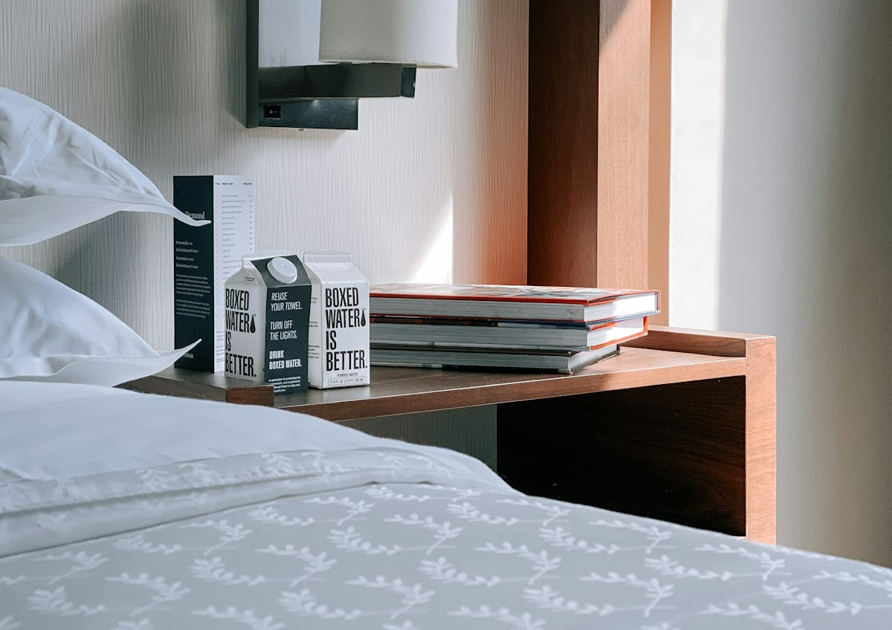
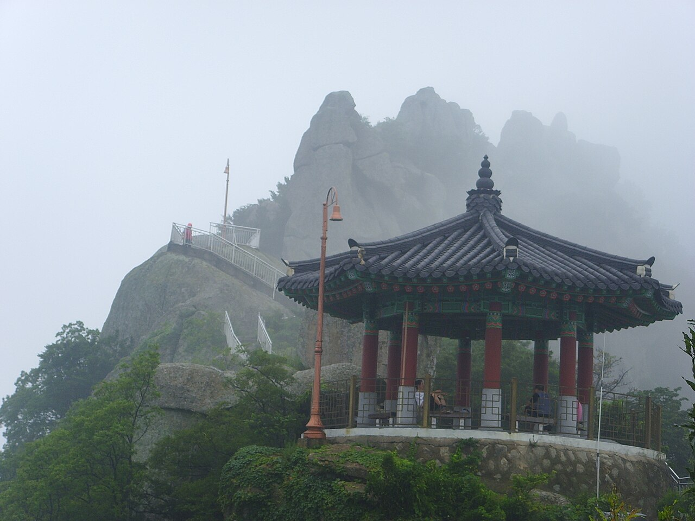
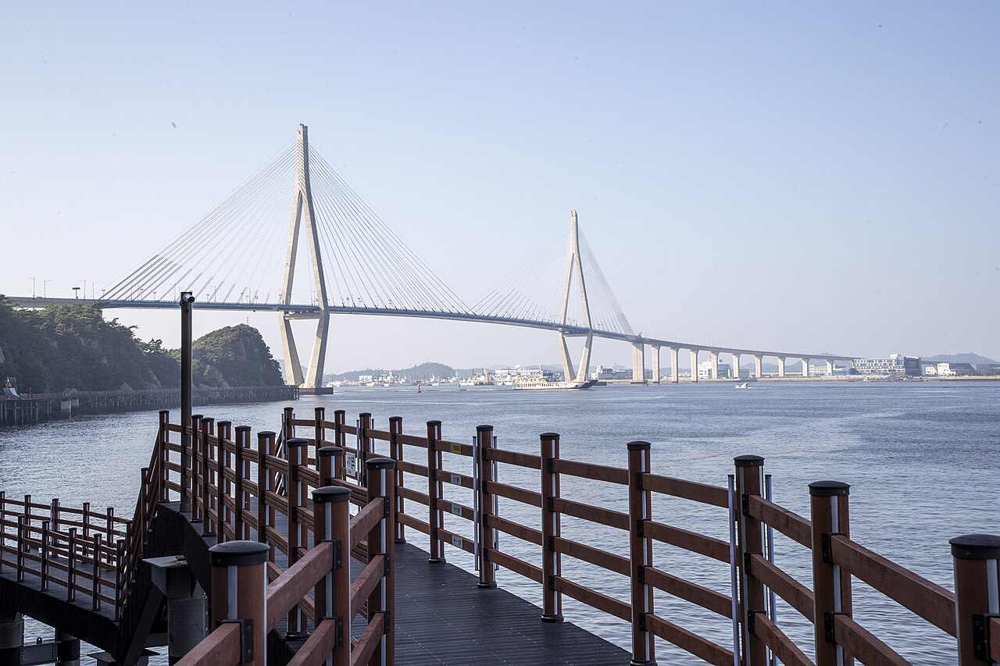
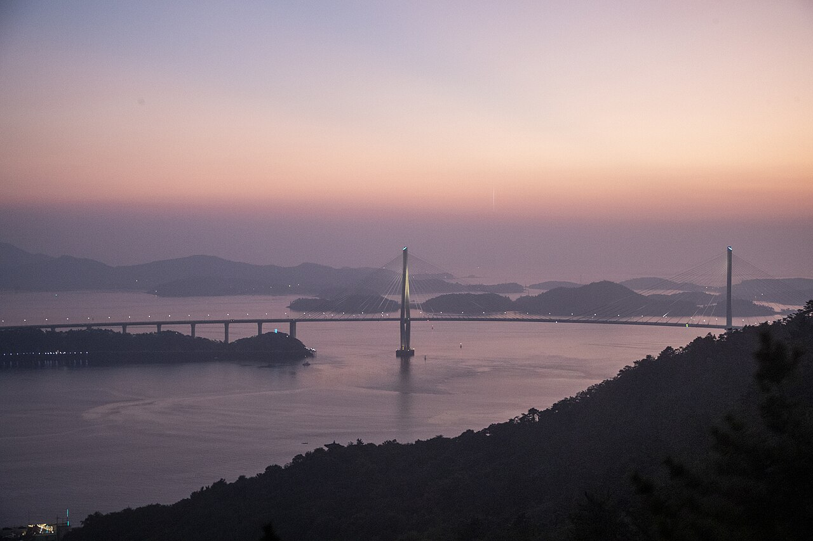

목포근대역사관 1관은 1897년 개항 이후 1900년에 건립된 서양식 벽돌조 건물로, 원형이 가장 잘 보존된 근대건축물 중 하나입니다. 붉은 벽돌과 독특한 문양, 당시의 벽난로와 건축 양식이 고스란히 남아있습니다. 내부에는 일제강점기 수탈과 목포 독립운동의 기록이 전시되어 있으며, 방공호와 일본군 유적지도 함께 둘러볼 수 있어 역사 교육과 감성 사진 촬영 모두를 만족시킵니다.
추천 소요시간
약 1시간 30분
주소
전라남도 목포시 영산로29번길 6
여행 팁
드라마 <호텔 델루나> 표지판이 있는 정문 계단에서 건물을 배경으로 찍으면 인생샷이 완성됩니다. 바로 옆 2관(구 동양척식주식회사)과 연계 관람을 추천합니다.

유달산 바위 아래 언덕을 따라 들어선 원도심 주택가
2. 서산동 시화골목 & 연희네슈퍼
Seosandong Poet & Mural Village · 레트로 감성 / 골목여행
목포 유달산 자락 서산동에 위치한 시화골목은 목포 어민들의 삶의 터전이었던 곳으로, 좁은 비탈길을 따라 1980년대 옛 정취가 고스란히 남아있습니다. 영화 <1987>에서 주인공 연희가 살던 "연희네슈퍼"가 원형 그대로 보존되어 당시 문구류와 잡화들을 구경할 수 있습니다. 언덕을 오르며 만나는 아기자기한 시화와 벽화, 그리고 정상 부근 "보리마당"에서 내려다보는 목포 앞바다 전경이 가슴을 뻥 뚫리게 합니다.
추천 소요시간
약 1시간 30분
주소
전라남도 목포시 보리마당로 14
여행 팁
연희네슈퍼 앞 평상과 공중전화 부스에서 복고풍 포즈로 사진을 찍어보세요. 오르막길이 있으니 편안한 신발을 추천합니다.

기암괴석 봉우리와 정자가 어우러진 유달산
3. 유달산 공원 & 노적봉
Yudalsan Mountain & Nojeokbong · 자연경관 / 역사유적
해발 228m의 유달산은 높지 않지만 웅장한 기암괴석과 빼어난 경관을 자랑하는 목포의 상징입니다. 입구에 위치한 노적봉은 임진왜란 당시 이순신 장군이 군량미를 쌓아둔 것처럼 위장하여 왜군을 물리쳤다는 역사적 일화로 유명합니다. 잘 정비된 등산로와 데크길을 따라 1등바위, 2등바위에 오르면 목포 도심과 영산강 하구, 푸른 다도해가 시원하게 펼쳐집니다.
추천 소요시간
약 1시간 30분~2시간
주소
전라남도 목포시 유달산길 118
여행 팁
정상까지 가지 않아도 노적봉 마당과 달성각 쉼터 주변에서 충분히 멋진 목포 전경을 감상할 수 있습니다. 봄에는 꽃축제가 열립니다.
목포해상케이블카는 북항스테이션을 출발해 유달산 정상 유달스테이션을 거쳐 바다를 건너 고하도스테이션에 도달하는 국내 최장(3.23km)의 해상 케이블카입니다. 바다 위를 가로지르는 지주 타워 높이만 155m에 달해 짜릿한 스릴을 선사합니다. 바닥이 투명한 크리스탈 캐빈을 타면 발밑으로 파도가 넘실대는 광경을 그대로 볼 수 있으며, 목포 시가지와 유달산 기암절벽, 목포대교, 다도해 섬들이 360도 파노라마로 펼쳐집니다.
추천 소요시간
왕복 탑승 및 관람 약 2시간 30분
주소
전라남도 목포시 해양대학로 110 (북항 승강장)
여행 팁
노을 지는 골든아워(일몰 40분 전)에 탑승하면 황금빛 바다와 반짝이는 목포대교 야경을 동시에 누릴 수 있는 인생 순간을 만날 수 있습니다.

목포대교를 바라보며 걷는 고하도 해상데크길
2. 고하도 해상데크길 & 판옥선 전망대
Gohado Coastal Trail & Observatory · 해안 힐링 트레킹 / 이색 건축
케이블카 고하도 승강장에서 숲길을 지나 내려오면 바다 위에 길게 놓인 1.8km의 해상데크길을 만날 수 있습니다. 한쪽에는 수천만 년 풍화작용이 빚어낸 기암괴석이, 다른 한쪽에는 시원한 바다가 펼쳐져 파도 소리를 들으며 걷기에 제격입니다. 코스 중간에는 이순신 장군의 판옥선 13척을 현대적으로 형상화한 24m 높이의 독특한 목조 전망대가 우뚝 솟아 있어 사방의 절경을 한눈에 담을 수 있습니다.
추천 소요시간
왕복 약 1시간 30분
주소
전라남도 목포시 고하도안길 234
여행 팁
케이블카를 타고 고하도역에서 내려 바로 연결됩니다. 바람이 시원하게 부니 겉옷을 챙기시고, 편안한 운동화는 필수입니다.
평화광장은 하당 신도심 바닷가를 따라 조성된 목포 시민과 여행자들의 열린 쉼터입니다. 탁 트인 바다 전망을 따라 조깅과 산책을 즐길 수 있으며, 광장 앞바다에 설치된 "춤추는 바다분수"는 수막 영상과 레이저, 조명, 분수 물줄기가 최신 음악에 맞춰 역동적으로 춤을 추는 환상적인 해상 멀티미디어 쇼를 선보입니다. 인근에는 갓바위 해상보행교와 맛집 거리도 이어집니다.
추천 소요시간
약 1시간
주소
전라남도 목포시 평화로 82
여행 팁
바다분수 공연은 계절별 야간 지정 시간에 맞춰 운영됩니다. 광장 벤치나 인근 오션뷰 카페 테라스에서 커피 한잔과 함께 관람해 보세요.
목포는 바다와 육지가 만나는 풍요로운 미식의 고장으로 "맛의 도시"로 공인받았습니다. 목포 최대 규모의 전통시장인 동부시장에서는 갓 잡은 싱싱한 제철 해산물과 떡, 닭강정 등 풍성한 먹거리가 넘쳐납니다. 특히 목포 9미로 꼽히는 꽃게무침과 꽃게살비빔밥, 갯벌의 산삼 세발낙지 탕탕이, 삭힌 홍어삼합, 여름 보양식 민어회는 오직 목포에서만 맛볼 수 있는 깊은 감칠맛을 자랑합니다.
추천 소요시간
식사 포함 약 1시간 30분
주소
전라남도 목포시 산정로 174
여행 팁
꽃게살비빔밥은 김가루와 참기름을 두른 밥에 게살 양념을 조금씩 비벼 김에 싸 먹으면 최고의 풍미를 느낄 수 있습니다.
스카이워크가 자리한 대반동 앞바다와 목포대교
2. 목포 해상스카이워크
Mokpo Skywalk · 오션뷰 / 전망 / 포토스팟
유달유원지 대반동 해변에 위치한 목포 해상스카이워크는 바다 위로 총 54m가 뻗어 나와 있는 전망 시설입니다. 상공 12~15m 높이에서 투명 강화유리와 스틸 그레이팅 바닥을 걸으며 마치 바다 위를 걷는 듯한 짜릿함을 느낄 수 있습니다. 정면으로는 장엄한 사장교 목포대교와 고하도가 그림처럼 펼쳐지며, 일몰 시간대에는 황금빛 노을이 스카이워크를 물들입니다.
추천 소요시간
약 45분
주소
전라남도 목포시 해양대학로 59
여행 팁
스카이워크 끝자락에서 목포대교를 등지고 찍는 인생샷이 가장 유명합니다. 덧신 착용 후 무료로 이용할 수 있습니다.

다도해 너머로 하루를 마감하는 붉은 노을
3. 대반동 유달유원지 & 목포대교 야경
Daebandong & Mokpodaegyo Sunset and Nightscape · 로맨틱 야경 / 카페 & 포차거리
대반동 유달유원지는 목포 시민과 여행자들이 입을 모아 손꼽는 최고의 노을 및 야경 스팟입니다. 일몰 무렵이면 다도해 수평선과 고하도 너머로 하늘이 분홍빛과 붉은빛으로 타오르고, 어둠이 깔리면 총연장 4.13km의 사장교인 목포대교 주탑에 오색 조명이 켜지며 장관을 연출합니다. 해안가를 따라 분위기 좋은 오션뷰 루프탑 카페와 목포 해산물 포차들이 늘어서 있어 낭만적인 밤을 만끽할 수 있습니다.
추천 소요시간
약 1시간 30분~2시간
주소
전라남도 목포시 해양대학로 57
여행 팁
해 지기 30분 전에 도착해 노을이 야경으로 바뀌는 매직아워(Magic Hour)를 즐기는 것이 당일치기 여행의 가장 로맨틱한 방법입니다.
운영 시간, 요금, 출입 통제 여부는 계절과 현지 사정에 따라 바뀔 수 있습니다. 방문 전에 각 장소의 공식 안내를 꼭 확인해 주세요.